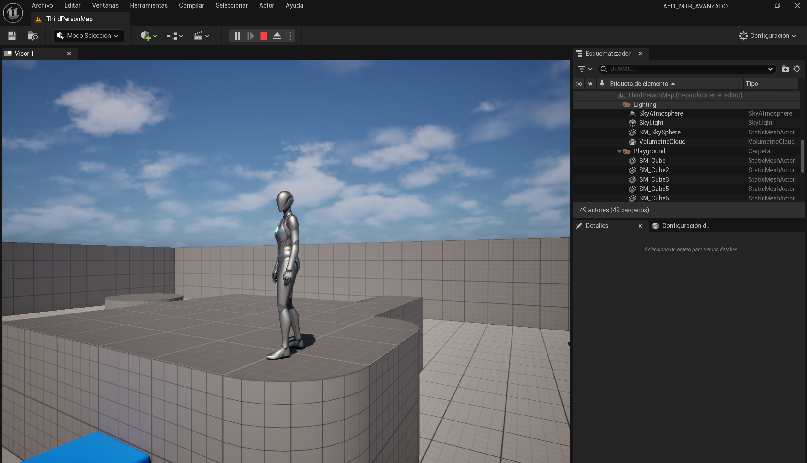
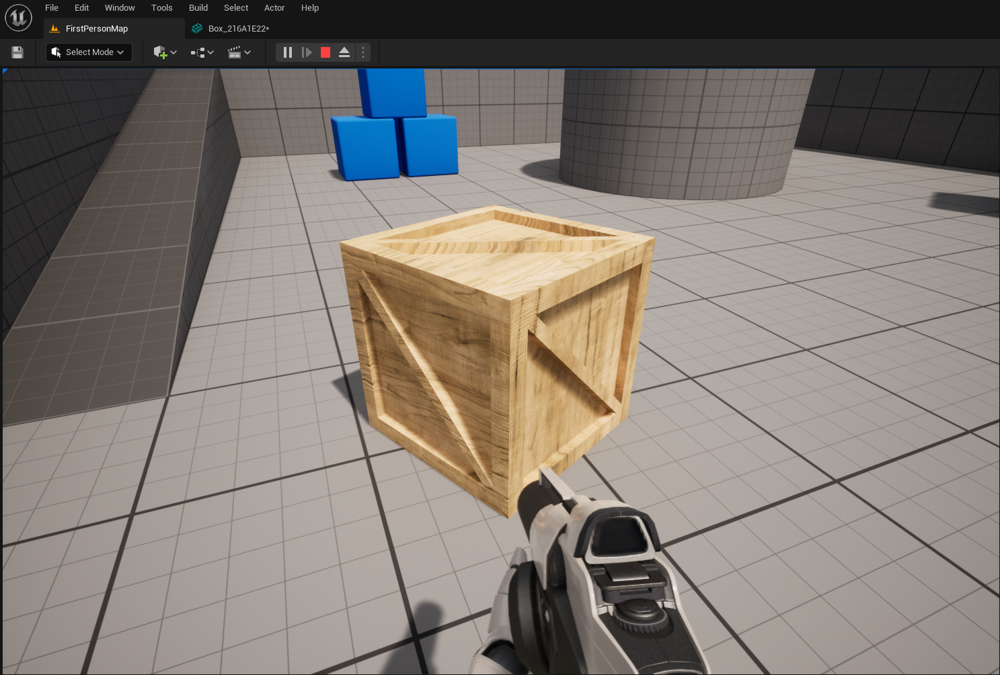

En la Guía de Inicio Rápido del Árbol de Comportamiento, aprenderás a crear una IA enemiga que responda al ver al jugador y proceda a perseguirlo. Al perder de vista al Jugador, tras unos segundos (que se pueden ajustar según tu preferencia), la IA dejará de perseguirla y se moverá aleatoriamente por el entorno hasta volver a ver al Jugador, como se ve en el vídeo de ejemplo de abajo.
Aquí va el video final
Al final de esta guía, comprenderás los siguientes sistemas: Scripting Visual de Planos Controladores de IA Pisarras Árboles de comportamiento Servicios de árboles de comportamiento Decoradores de árboles de comportamiento Tareas del árbol de comportamiento
Para esta guía, estamos utilizando un nuevo proyecto de plantilla en tercera persona de Blueprint.